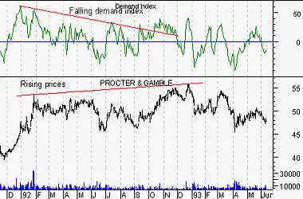

Demand Index
Overview
The Demand Index combines price and volume in such a way that it is often a leading
indicator of price change. The Demand Index was developed by James Sibbet.
Interpretation
Mr. Sibbet defined six "rules" for the Demand Index:
- A divergence between the Demand Index and prices suggests an approaching
weakness in price.
- Prices often rally to new highs following an extreme peak in the Demand Index (the
Index is performing as a leading indicator).
- Higher prices with a lower Demand Index peak usually coincides with an important top
(the Index is performing as a coincidental indicator).
- The Demand Index penetrating the level of zero indicates a change in trend (the
Index is performing as a lagging indicator).
- When the Demand Index stays near the level of zero for any length of time, it
usually indicates a weak price movement that will not last long.
- A large long-term divergence between prices and the Demand Index indicates a major
top or bottom.
Example
The following chart shows Procter & Gamble and the
Demand Index. A long-term bearish
divergence occurred in 1992 as prices rose while the Demand Index fell. According to
Sibbet, this indicates a major top.

Calculation
The Demand Index calculations are too complex for this book (they require 21-columns of
data).
Sibbet's original Index plotted the indicator on a scale labeled +0 at the top, 1 in the
middle, and -0 at the bottom. Most computer software makes a minor modification to the
indicator so it can be scaled on a normal scale.